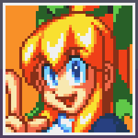

|
|
| Here you can find the English text romanized from Japanese. This can help you learn some Japanese too. No profile pictures here though, or the Japanese in it's Japanese text either, so just go to the other sections to see it. Enjoy. | ||
| # | English | Romanized Japanese |
| 001 |
Name: Rockman Description: A Super-robot created by Dr. Light. He has saved the world from crisis in the past. He's our hero! Quote: "I protect the world's peace!" Strength: Strong sense of justice Weakness: Hasty, thoughtless Likes: Animals Dislikes: Peace-disrupting things |
Namae: ROKKUMAN Byousha: In'you: Chousho: Tansho: Suki: Kirai: |
| 002 |
Name: Roll Desription: A housekeeping robot built by Dr. Light. She is like a sister to Rock. Lately she is looking more grown up. Quote: "Do your best, Rock!" Strength: Weakness: Easily frightened Likes: Spring cleaning, cooking Dislikes: Cockroaches |
Namae: Byousha: In'you: Chousho: Mendoumigayoi Tansho: Suki: Kirai: |
| 003 |
Name: Cutman Description: A robot like a lumberjack. The cutter on his head can easily cut a large tree in half. Quote: "Snip, snip, snip!" Strength: His head cuts well Weakness: Likes: Cutting Dislikes: Paper, Rock, Scissors |
Namae: Byousha: In'you: Chousho: Tansho: Hanashi o kikanai Suki: Kirai: Janken |
| 004 |
Name: Gutsman Description: Public works construction robot. Powerful like an ant, he can carry a 2-ton boulder. Quote: "Power-----Total destruction!" Strength: Incredible strength Weakness: Quick-tempered and impatient Likes: Karaoke Dislikes: Logic |
Namae: Byousha: In'you: Chousho: Tansho: Suki: Kirai: |
| 005 |
Name: Iceman Description: Quote: Strength: Weakness: Selfish Likes: Snowball Fights Dislikes: Saunas |
Namae: Byousha: In'you: Chousho: Tansho: Suki: Kirai: |
| 006 |
Name: Bombman Description: Bedrock-destruction robot. His Hyper Bomb is a powerful explosive that can damage any rock. Quote: "3, 2, 1.. Boom" Strength: Weakness: Likes: Bowling Dislikes: Lighters and matches |
Namae: Byousha: In'you: "3, 2, 1..Buppanasuzo-i" Chousho: HADE zuki Tansho: Mono o daiji ni shinai Suki: Kirai: |
| 007 |
Name: Fireman Description: Quote: Strength: Passionate, enthusiastic Weakness: Likes: Camping Dislikes: Rainy weather |
Namae: Byousha: In'you: "Ore ni chikazuku to ya KEDO suruze!" Chousho: Tansho: Okorippai Suki: Kirai: |
| 008 |
Name: Elecman Description: Quote: "Eat this! Thunder Beam!!" Strength: Weakness: Likes: Dislikes: Rubber products |
Namae: Byousha: In'you: Chousho: Tansho: Suki: Kirai: |
|
026 |
Name: Toadman Description: A robot made to do mental work. Uses a strong, acidic rain called Rain Flush as his special attack. Quote: "*croak* Don't get me angry, I'll call my rain! *Ribbit!*" Strength: Skilled at science Weakness: Tone-deaf Likes: Triple-jumping Dislikes: Snakeman |
Namae: TOODOMAN Byousha: Nou sagyou you ROBOTTO. Tsuyoi sansei no ame wo furaseru, REINFURASSHU ga, tokushu buki. In'you: "ORA ga okoreba, ame wo yobi KERO!" Chousho: Rika ga tokui Tansho: Onchi Suki: Sandan tobi Kirai: SUNEEKUMAN |
|
027 |
Name: Drillman Description: A robot made for drilling at construction sites. Once, he was publicly given an award for hitting a hot spring. Quote: "Oops... I put a hole in that gas can and now it's leaking..." Strength: Eager to work Weakness: Doesn't plan his actions Likes: Rushing through work Dislikes: Calculating numbers |
Namae: DORIRUMAN Byousha: Kouji kenba no, ana hori ROBOTTO. Ichido, onsen wo, hori atete hyoushou sareta koto ga aru. In'you: "A, GASU kan ni ANA akete shimota." Chousho: Shigoto nesshin Tansho: Keikakusei ga nai Suki: Tokkan kouji Kirai: Keisan |
|
028 |
Name: Pharoahman Description: A robot made to survey the pyramids. He is junior officer of the Group of 1000 and is loyal to the mummies. Quote: "I... I only obey myself!" Strength: Charismatic Weakness: Girl-crazy Likes: Treasure Dislikes: Tomb-stormers |
Namae: FARAOMAN Byousha: PIRAMIDDO chousa you ROBOTTO. 1000tai mono, buka, MAMIIRAtachi wo, shitagaeteiru. In'you: "Ware ni, ware ni shitagau no da!" Chousho: KARISUMA sei ga aru Tansho: Bijin ni yowai Suki: Zaihou Kirai: Haka arashi |
|
029 |
Name: Ringman Description: A robot made to defeat Rockman. Because he lacks a Shot weapon, he uses the ring on his head for an attack. Quote: "Rockman, I'll never forgive you!" Strength: Strategic Weakness: Self-centered Likes: Ring-toss Dislikes: Children |
Namae: RINGUMAN Byousha: ROKKUMAN wo, taosu tame ni tsukurareta ROBOTTO. Buki wa, SHOTTO ga nukeru you ni, RINGUjou ni, natteiru. In'you: "ROKKUMAN, yousha wa shinai zo!" Chousho: Senryakuka Tansho: Jishinka Suki: Wanage Kirai: Kodomo |
|
030 |
Name: Dustman Description: A robot made to inhale and collect trash. He hates it when his vacuum hole is covered. Quote: "Please don't let me inhale anything nasty." Strength: Retired Weakness: Has horrible breath Likes: Spring cleaning Dislikes: Pollen |
Namae: DASUTOMAN Byousha: GOMI wo suikonde, atsumeru ROBOTTO. Suikomiguchi ga, fusagareru koto wo mottomo, kirau. In'you: "Amari, HEN na mono suwasenaide." Chousho: Taishoku kan Tansho: Iki ga kusai Suki: Nenmatsu oosouji Kirai: Kafun |
|
031 |
Name: Diveman Description: A robot built to function as a submarine. The Dive Missile, which can be used both in water and on land, is heat-seaking. Quote: "Ugh... I'm seasick... urf--" Strength: Good hearing Weakness: Can't drive Likes: Seas with coral reefs Dislikes: Pirateman |
Namae: DAIBUMAN Byousha: Sensuikan no, kinou wo motta ROBOTTO. DAIBU MISAIRU wa, suirikuryou you, HOOMINGU MISAIRU da. In'you: "U. Funayoi shita... OMEE" Chousho: Mimi ga ii Tansho: Norimono yoishasui Suki: Sangoshou no umi Kirai: PAIREETSUMAN |
|
032 |
Name: Skullman Description: A well-balanced robot made for battle. He was taught nothing but how to fight. Quote: "Yeah, fight, fight!" Strength: Does not regret having bones for a body Weakness: Has bad taste Likes: Horror films Dislikes: Concentrating |
Namae: SUKARUMAN Byousha: BARANSU no toreta, sentou you ROBOTTO. Tatakau koto igai, nanimo oshierareteinai. In'you: "Saa, tatakau zo! Tatakau zo..." Chousho: Hone mi wo oshimanai Tansho: Akushumi Suki: HORAA eiga Kirai: Kodawar |
|
033 |
Name: Gravityman Description: He is able to manipulate the earth's gravitational pull through his Gravity Control function. However, he does not have a strong weapon. Quote: "Nevertheless, the globe spins on..." Strength: Dilligent in his studies Weakness: Unsociable Likes: Physics Dislikes: Outer space |
Namae: GURABITIIMAN Byousha: Juuryoku KONTOROORU sousa ni yori juuryoku wo ayatsuru koto ga dekiru. Shikashi, tsuyoi buki wa, motteinai. In'you: "Soredemo, chikyuu wa mawaru..." Chousho: Kenkyuu nesshin Tansho: Shakousei ga nai Suki: Butsuri gaku Kirai: Uchuukuukan |
|
034 |
Name: Waveman Description: He is equipped with the water-spout-forming Water Wave and the powerful Forest attack. However, when approached head on, he is weak. Quote: "D... Don't come up to me...!" Strength: Sentimental Weakness: Dislikes people Likes: Walking underwater Dislikes: Sludge |
Namae: WEEBUMAN Byousha: Mizubashira wo dasu WOOTAAWEEBU to kyouryoku na MORI wo soubi shiteiru. Shikashi, sekkin sen ni wa, yowai. In'you: "O, ORE ni chikayoruna yo..." Chousho: Namida moroi Tansho: Hitogirai Suki: Kaitei sanpo Kirai: HEDORO |
|
035 |
Name: Stoneman Description: He is able to spin stones and use them to strike his opponent with his special attack, Power Stone. He is good friends with Gutsman. Quote: "Yo Guts, take a look at this!" Strength: Hard as stone Weakness: Stubborn Likes: Oil-drinkers Dislikes: Mean people |
Namae: SUTOONMAN Byousha: Iwa wo kaiten sasete, teki ni butsukeru PAWAA SUTOON ga buki. GATTSUMAN to wa totemo, naka ga yoi. In'you: "You, GATTSU, mou ikken, iko" Chousho: Ishi ga katai Tansho: Ganko Suki: OIRU nomi aru ki Kirai: KECHI na YATSU |
|
036 |
Name: Gyroman Description: Because of the cost, this unfortunate robot was made with used propellers. However, he himself does not worry about them. Quote: "No problem!" Strength: Has high self-esteem Weakness: Fault-finding Likes: Bamboo dragonflies Dislikes: Jet engines |
Namae: JAIROMAN Byousha: KOSUTO no mondai de, PUROPERA shiki ni natte shimatta, hiun no ROBOTTO. Shikashi, honnin wa, ki ni shiteinai. In'you: "Sonna koto wa, mondai de wa nai" Chousho: Hokori takai Tansho: Hito wo mikudasu Suki: Taketonbo Kirai: JETTO ENJIN |
|
037 |
Name: Starman Description: A robot made to explore outer space. His dream is to travel to the far reaches of the heavens with his beloved by his side. Quote: "I can see only you and the stars..." Strength: Romantic Weakness: Has a cluttered mind Likes: Opera music Dislikes: Robots without dreams |
Namae: SUTAAMAN Byousha: Uchuu kaihatsu you ROBOTTO. Shourai no yume wa, uchuu no hate ni koibito to, issho ni, iku koto. In'you: "Ano hoshi ga, kimi ni mo mieru daro" Chousho: ROMANCHISUTO Tansho: Omoi komi ga hageshii Suki: OPERA kanshou Kirai: Yume no nai ROBOTTO |
|
038 |
Name: Chargeman Description: A robot made to help reduce the world's spending. Because of his efforts, water and gas have been made more affordable. Quote: "I tell ya, kids these days..." Strength: Works wholeheartedly Weakness: Quick to argue Likes: Old tales Dislikes: Simple writers |
Namae: CHAAJIMAN Byousha: Sekai wo kakemeguru, yuzou ROBOTTO. Sekitan to, mizu ga, douryoku ken de kanari no KOSUTO ga kakaru no gaketten. In'you: "ttaku, saikin no wakai mon wa" Chousho: Ichizu na seikaku Tansho: KENKAppayai Suki: Mukashi no jimanbanashi Kirai: KATAKANA no mono |
|
039 |
Name: Napalmman Description: A cannon-like robot who protects a weapon factory. When the weapons were mysteriously set off, only he survived. Quote: "Just look at all this power~!" Strength: Obligated to his duties Weakness: Almost maniacal Likes: All weapons Dislikes: First Aid kits |
Namae: NAPAAMUMAN Byousha: Heiki koujou wo mamoru, zenshin ga buki no ROBOTTO. Heiki wa kubutsukan wo tsukutta ga, daremo, minikonakatta. In'you: "Kono hakai ryoku wo, miro!" Chousho: Ninmu ni chuujitsu Tansho: MANIAKKU na tokoro Suki: Buki, heiki zenpan Kirai: Anzen zouch |
|
040 |
Name: Crystalman Description: He began the manufacturing of artificial crystals. In the beginning, he did it to supply funding to Dr. Wily. Quote: "I can see your suffering..." Strength: Mysterious Weakness: Shady Likes: Fortune-telling Dislikes: Scientists |
Namae: KURISUTARUMAN Byousha: Jinkou KURISUTARU wo tsukuri daseru. Saisho wa, WAIRII ga, kane mouke wo suru moku teki de tsukutta. In'you: "Omae no kurushimu sugata ga, mieta" Chousho: Shinpi teki Tansho: Usankusai Suki: Uranai Kirai: Kagakusha |
|
041 |
Name: Blizzardman Description: A weather observation robot who is able to make snow fall. Along with other weather robots, he frequently appeared on TV. Quote: "I hope it's snowy tomorrow!" Strength: Good at explaining things Weakness: Easily becomes uncontrollable Likes: Skiing Dislikes: Snowboarding |
Namae: BURIZAADOMAN Byousha: Kishou kansoku you ROBOTTO. Yuki wo furasu koto ga dekiru. Otenki ROBOTTO to shite, TEREBI ni deteita koto mo aru. In'you: "Asu no tenki mo, yuki deshou" Chousho: Kaisetsu jouzu Tansho: Are yasui Suki: SUKII Kirai: SUNOOBOODO |
|
042 |
Name: Centaurman Description: His weapon is the void-creating Centauros Flash. It captures its target and sucks energy out its victim. Quote: "Go, fall into my void!" Strength: Resolute Weakness: Regretful Likes: Gambling Dislikes: Ignorance |
Namae: KENTAUROSUMAN Byousha: Kuukan wo neji makeru KENTAUROSU FURASSHU ga, buki. Da ga, ENERUGII shouhi ga, hageshii no ga, ketten. In'you: "Kuukan no ana ni, ochiro!" Chousho: Omoikiri ga ii Tansho: Koukai ga ooi Suki: GYANBURU Kirai: MUCHI |
|
043 |
Name: Flameman Description: Runs on a small amount of internal steam power. He usually runs out of oil three times per year. Quote: "Oops, time to refuel..." Strength: Prompt Weakness: Demanding Likes: Grooming his whiskers Dislikes: Cheap oil |
Namae: FUREEMUMAN Byousha: Kogata no karyoku hatsu denki wo naizou shiteiru. 1 nichi 3 kai, kimatta jikan ni, OIRU koukan wo okonau. In'you: "A, OIRU koukan no jikan da" Chousho: Jikan ni seikaku Tansho: Chuumon ga ooi Suki: HIGE no teire Kirai: Yasumono no OIRU |
|
044 |
Name: Knightman Description: He was designed in the image of an ancient, honorable knight. After a duel, he takes his fallen enemy to the Group of 1000. Quote: "You need more training!" Strength: Chivalrous Weakness: Holds back his money Likes: Honor Dislikes: Cheating opponents |
Namae: NAITOMAN Byousha: Chuusei no, kishi wo moto ni, sekkei sareta. Kettou de, taoshita teki wa 1000tai wo koeru. In'you: "KIMI ni, kettou wo mou shikomu!" Chousho: Kishidou seishin Tansho: Yuuzuu ga kikanai Suki: Meiyo Kirai: Kitanai senpou |
|
045 |
Name: Plantman Description: A robot built to manage gardens. He is able to speak with flowers and plants. He is very popular with them. Quote: "Heh heh... what a beautiful flower..." Strength: Compassionate Weakness: Easily depressed Likes: Sunlight Dislikes: Bees |
Namae: PURANTOMAN Byousha: Shokubutsu kanri ROBOTTO. Kusabana to hanasu koto ga dekiru. Shokubutsu en no ninkimono datta. In'you: "Fufu-. Kono ohana, kirei desho" Chousho: Sensai Tansho: Ochikomi yasui Suki: Nikkou yoku Kirai: MITSUBACHI |
|
046 |
Name: Tomohawkman Description: Modeled after a Native American warrior. He is able to hit a candle's flame with a thrown tomahawk from 100 meters away. Quote: "Tomahawkman does not lie." Strength: Courageous Weakness: Exclusionary Likes: Horseback riding Dislikes: Lies |
Namae: TOMAHOOKUMAN Byousha: NEITIBU AMERIKAN no, senshi ga MODERU. TOMAHOOKU wo nagete, 100 MEETORU saki no ROUSOKU no hi wo keseru. In'you: "TOMAHOOKUMAN, USO, TSUKANAI" Chousho: Yuuki ga aru Tansho: Haita teki Suki: Jouba Kirai: USO |
|
047 |
Name: Windman Description: By combining his propellers and jets, he can create hurricane-force winds. He is rivals with Airman. Quote: "Cool, let's make some wind!" Strength: Good cook Weakness: Cannot ride a bicycle Likes: Chinese culture Dislikes: Chinese medicine |
Namae: UINDOMAN Byousha: PUROPERA to JETTO de, fuusoku 200 MEETORU no kaze wo okoseru. EAAMAN to wa, RAIBARU kankei ni aru. In'you: "SUGOI kaze, okosu, aru yo" Chousho: Ryouri ga umai Tansho: Jitensha ni norenai Suki: KANFUU Kirai: Kanpouyaku |
|
048 |
Name: Yamatoman Description: He was modeled after a Japanese samurai. Training with the Yamato Spear is a daily routine. He has great respect for Knightman. Quote: "I am only passing by..." Strength: Thinks like a Yamato Weakness: Weak to money Likes: Japanese people Dislikes: The English language |
Namae: YAMATOMAN Byousha: Nihon no bushi wo, MODERU ni tsukurareta. YAMATO SUPIA wo doku no ga, nikka. NAITOMAN wo, sonkei shiteiru. In'you: "YAMATOMAN ga, uchi tottari~!" Chousho: Yamato tamashii Tansho: Okane ni yowai Suki: Nihontou Kirai: Eigo |
|
049 |
Name: Freezeman Description: An experimental robot that makes pollution-free energy. He usually takes a dramatic pause to consider his next move. Quote: "Yeah, filtered, definitely filtered..." Strength: Perfectionist Weakness: Repetitious Likes: Mystery novels Dislikes: Pollution |
Namae: FURIIZUMAN Byousha: Mukougai ENERUGII jikken no shisaku ROBOTTO. Kakko ii, toujou no POOZU wo, itsumo kangaeteiru. In'you: "Koushite, kou. KIMAtta na..." Chousho: Kanpeki shugi Tansho: Kudoi Suki: Suiri shousetsu Kirai: Kougai |
|
050 |
Name: Junkman Description: A robot made from usable parts found in the trash. He can find a use for almost anything, no matter how strange. Quote: "What a waste. Still, it'll do..." Strength: Thrifty Weakness: Overly enthusiastic Likes: Reusable trash Dislikes: Thrown-away food |
Namae: JANKUMAN Byousha: GOMI no naka kara, ROBOTTO ni tsukaeru bihin wo atsumeru tame ni tsukurareta. Da ga, hen na mono bakari atsumeteiru. In'you: "Mottainai. Mada, tsukaeru no ni" Chousho: Ken'yakuka Tansho: Necchuu shisugiru Suki: GARAKUTA Kirai: NamaGOMI |
|
|